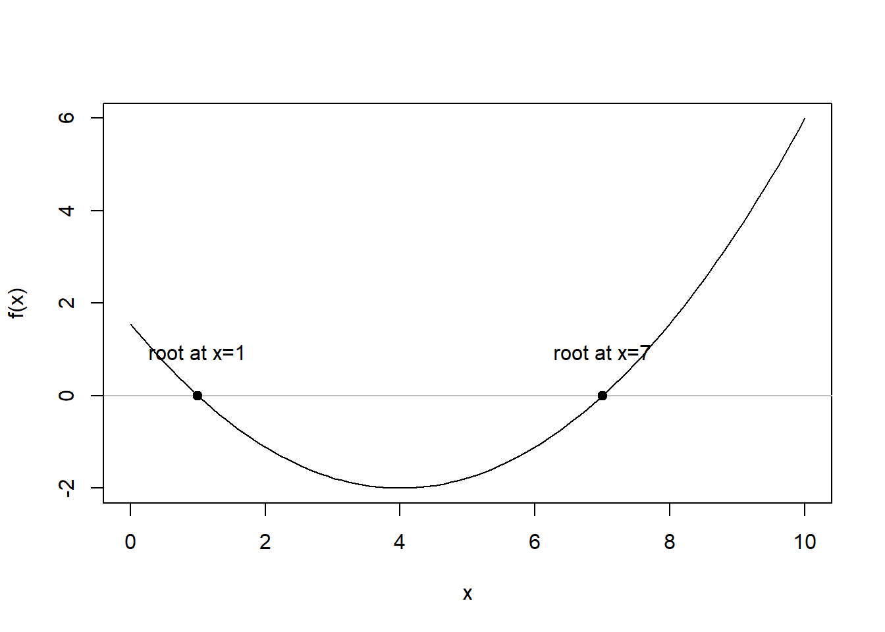

7 Root-finding
7.1 Main problem
Suppose \(f : \mathbb{R} \rightarrow \mathbb{R}\) is a continuous function. A root of \(f\) is a solution to the equation \(f(x)=0)\).
That is, a root is a number \(a \in \mathbb{R}\) such that \(f(a)=0\), i.e.,
\[ R=\{ a\in \mathbb{R}:f(a)=0\} \]
If we draw the gparh of our function, say \(y=f(x)\), which is a curve in the plane, a solution of \(f(x)=0\) is the \(x\)-coordinate of a point at which the curve crosses the \(x\)-axis.
7.1.1 The Roots of a Function
Except for some very special functions, it is not possible to find an analytic expression for the root/roots.
A commonly arising function is the polynomial function of the form:
\[ P_{n}(x)=a_0+a_1x+a_2x^2+\cdots+a_nx^n \]
We know that the roots of the quadratic function \(P_2(x)=a_0+a_1x+a_2x^2\) can be obtained analytically by the expression:
\[ x=\frac{-a_1 \pm \sqrt{a_1^2-4a_0a_2}}{2a_0} \]
Unfortunately, such analytical formulas for the roots do not exist for polynomials of degree 5 or greater. Thus, most computational methods for root-finding are iterative in nature.
In general, the solution to a physical problem can often be expressed as the root of a suitable function, and we will see different methods of how to solve such problems.
But first, some examples.
7.1.2 Example: Loan repayments
A loan has an initial amount \(P\), a monthly interest rate \(r\), a duration of \(N\) months and a monthly repayment of \(A\). The remaining debt after \(n\) months is given by \(P_n\):
\[ P_0=P \] \[ P_{n+1}=P_n(1+r)-A \]
After iterative substitutions, we obtain:
\[ \begin{split} P_n & = P(1+r)^n-A\sum_{i=0}^{n-1}(1+r)^i \\ & = P(1+r)^n-A[(1+r)^n-1]/r \end{split} \]
At the end of the period (\(n=N\)), we know that \(P_n=0\) (we have repaid our loan), we get:
\[ \frac{A}{P}=\frac{r(1+r)^N}{(1+r)^N-1} \]
Knowing the loan’s amount \(P\), the number of months \(N\) and the monthly repayment \(A\), what is the interest rate \(r\) that we pay? The answer is the solution of \(f(r)=0\), where:
\[ f(r)=\frac{A}{P}=\frac{r(1+r)^N}{(1+r)^N-1} \]
Which is not available in closed form.
f <- function(dR, dA, dP, iN) {
dOut = dA/dP - (dR * (1.0 + dR)^iN)/((1.0 + dR)^iN - 1)
return(dOut)
}
vR <- seq(1e-5, 0.2, 0.001)
plot(vR, f(vR, dA = 10, dP = 100, iN = 20), type = "l")
abline(h = 0, col = "red")Other examples:
- Estimation of Econometric Models
- Problems in Finance
- Physics (area minimization, shooting problems, orbital motions, …)
- …
7.2 Numerical Methods for Root-finding
As suggested above, when an analytical expression is not available for the root of some function, \(f\), i.e., the solution to \(f(x)=0\), we have to use numerical methods that are iterative in nature.
The idea behind an iterative method is the following:
Starting with an initial approximation, \(x_0\), construct a sequence of iterates \(\{ x_n \}\) using an iteration formula with hope that this sequence converges to a root of \(f(x)=0\).
As concrete examples of such numerical methods, we will consider the Newton-Raphson method, the secant method and the bisection method.
7.3 The Newton-Raphson Method
The Newton-Raphson method is a root-finding algorithm that uses an iterative process to approach one root of a funtion.
Suppose the function \(f\) is differentiable with continuous derivative \(f'\) and a root \(a\).
Let \(x_0 \in \mathbb{R}\) and think of \(x_0\) as our current ‘guess’ at \(a\).
Now, the straight line through the point \((x_0,f(x_0))\) with slope \(f'(x_0)\) is the best straight approximation to the function \(f(x)\) at the point \(x_0\).
The equation of this straight line is given by \(y=f(x_0)+f'(x_0)(x-x_0)\)
This line crosses the \(x\)-axis at a point \(x_1\), which should be a better approximation than \(x_0\) to \(a\).
-
We find \(x_1\) by solving the equation for the straight line for \(x\) with \(y=0\):
\[ x_1=x_0-\frac{f(x_0)}{f'(x_0)} \] i.e., we update our best guess to be \(x_1\) which is obtained from \(x_0\) by subtracting a correction term \(f(x_0)/f'(x_0)\).
-
Now that we have \(x_1\), we use the same procedure to get the next best guess:
\[ x_2=x_1-\frac{f(x_1)}{f'(x_1)} \]
[ ] (source: https://commons.wikimedia.org/wiki/File:NewtonIteration_Ani.gif)
] (source: https://commons.wikimedia.org/wiki/File:NewtonIteration_Ani.gif)
7.3.1 Notes for the Newton-Raphson method
It can be shown that if \(f\) is ‘well-behaved’ at \(a\) (in particular, if \(f'(a) \ne 0\) and \(f''\) is finite and continuous at \(a\)) and you start with \(x_0\) ‘close enough’ to \(a\), then \(x_n\) will converge to \(a\) quickly.
- Unfortunately, we don’t know if \(f\) is well behaved at \(a\) until we know \(a\), and we don’t know beforehand how close is close enough.
Since we are expecting \(f(x) \rightarrow 0\), a good stopping condition for the Newton-Raphson algorithm is \(|f(x_n)| \le \varepsilon\) for some tolerance \(\varepsilon\).
We also always want a hard limit on the maximum number of iterations, \(n_{max}\), in case we get stuck in an infinite loop.
Implementing the Newton-Raphson method in R is straightforward; we just need the function \(f\), its derivative \(f'\), an initial guess \(x_0\), and the two stoppoing criteria \(\varepsilon\) (the convergence tolerance) and \(n_{max}\) (the maximum number of iterations).
7.3.2 The Newton-Raphson algorithm
The Newton-Raphson algorithm proceeds as follows:
Define inputs: \(f(x)\), \(x_0\), \(\varepsilon\), \(n_{max}\). For \(n=0,1,...\) until stopping condition reached, do:
Compute \(f(x_n)\) and \(f'(x_n)\).
Compute \(x_{n+1}=x_n-\frac{f(x_n)}{f'(x_n)}\)
-
Stopping conditions:
- If \(|f(x_n)| \le \varepsilon\) then set \(a=x_n\) and stop; Algorithm converged.
- If \(n=n_{max}\) then stop; Maximum number of iterations has been reached, algorithm failed to converge.
7.3.3 Drawbacks of the Newton-Raphson method
The Newton-Raphson root-finding method works by producing a sequence of guesses to the root and, under favourable circumstances, converges rapidly to the root from an initial guess.
- Unfortunately, it cannot be guaranteed to work.
It can be a costly task to calculate the required derivative \(f'(x_n)\) for every iteration, when we are not able to analytically derive it.
Instability: if the iteration hits a value \(x_n\) where the function is close to flat (i.e., \(f'(x_n)\) close to zero), the iteration is sent far away from the current point.
No guarantee of convergence: the iteration might get caught up in an infinite loop.
In general, we need to pick a starting point relatively close to the desired root (could be more than one).
[]
7.3.4 Loan example
Consider the loan repayments problem with objective function:
\[ f(x) = \frac{A}{P}-\frac{x(1+x)^N}{(1+x)^N-1} \]
and first derivative:
\[ f'(x) = \frac{[(1+x)^N+Nx(1+x)^{N-1}][(1+x)^N-1]-Nx(1+x)^{2N-1}}{[(1+x)^N-1]^2} \]
f <- function(dX, dA, dP, iN) {
dOut = dA/dP - (dX * (1.0 + dX)^iN)/((1.0 + dX)^iN - 1)
return(dOut)
}
f_prime <- function(dX, dA, dP, iN) {
dNum1 = ((1.0 + dX)^iN + iN * dX * (1.0 + dX)^(iN - 1)) * ((1.0 + dX)^iN - 1)
dNum2 = iN * dX * (1.0 + dX)^(2 * iN - 1)
dDen = ((1.0 + dX)^iN - 1)^2
dOut = -(dNum1 - dNum2)/dDen
return(dOut)
}
NR <- function(f, f_prime, dX0, dTol = 1e-9, max.iter = 1000, ...) {
dX <- dX0
fx <- f(dX, ...)
iter <- 0
while ((abs(fx) > dTol) && (iter < max.iter)) {
dX <- dX - f(dX, ...)/f_prime(dX, ...)
fx <- f(dX, ...)
iter <- iter + 1
cat("At iteration ", iter, "value of x is: ", dX, "\n")
}
if (abs(fx) > dTol) {
cat("Algorithm failed to converge\n")
return(NULL)
} else {
cat("Algorithm converged\n")
return(dX)
}
}
NR(f, f_prime, dX0 = 0.15, dA = 10, dP = 100, iN = 20)
#> At iteration 1 value of x is: 0.08241672
#> At iteration 2 value of x is: 0.07758319
#> At iteration 3 value of x is: 0.0775469
#> At iteration 4 value of x is: 0.0775469
#> Algorithm converged
#> [1] 0.0775469#> [1] -3.534942e-097.4 The Secant method
If the derivative \(f'\) does not exist (or we don’t want to compute it), then we can use the secant method, which only requires that the function \(f\) is continuous.
Suppose \(f\) has a root \(a\). For this method, we assume that we have two current ‘guesses’, \(x_0\) and \(x_1\), for the value of \(a\).
We will think of \(x_0\) as an older guess and we want to replace the pair \(x_0,x_1\) by the pair \(x_1,x_2\), where \(x_2\) is a new guess.
To find a new guess \(x_2\), we first draw the straight line from \((x_0,f(x_0))\) to \((x_1,f(x_1))\), i.e., the secant of the curve \(y=f(x)\).
The equation of the secant is:
\[ y=f(x_1) + \frac{f(x_0)-f(x_1)}{x_0-x_1}(x-x_1) \]
As the new guess, we will use the \(x\)-coordinate \(x_2\) of the point at which the secant crosses the \(x\)-axis, and so \(x_2\) can be found from:
\[ 0 = f(x_1)+\frac{f(x_0)-f(x_1)}{x_0-x_1}(x-x_1) \]
Which implies:
\[ x_2=x_1-f(x_1) \frac{x_0-x_1}{f(x_0)-f(x_1)} \]
Repeating this, we get a second-order recurrence relation (each new value depends on the previous two):
\[ x_{n+1}=x_n-f(x_n) \frac{x_{n-1}-x_n}{f(x_{n-1})-f(x_n)} \]
Note that if \(x_n\) and \(x_{n-1}\) are cloes together, then:
\[ \frac{1}{f'(x_n)} \approx \frac{x_{n-1}-x_n}{f(x_{n-1})-f(x_n)} \]
And we can thus view the secant method as an approximation of the Newton-Raphson method.
Similar convergence properties to the Newton-Raphson method:
If \(f\) is well behaved at \(a\) and you start with \(x_0\) and \(x_1\) sufficiently close to \(a\), then \(x_n\) will converge quickly to \(a\), though not quite as fast as the NR method.
We cannot guarantee convergence.
Trade-off compared to NR: we no longer need to know \(f'\) but in return we give up some speed and have to provide two initial points, \(x_0\) and \(x_1\).
7.5 The bisection method
A more reliable but slower approach is root-bracketing, which works by first isolating an interval in which the root must lie, and then successively refining the bounding interval in such a way that the root is guaranteed to always lie inside the interval.
The canonical example is the bisection method, in which the width of the bounding interval is successively halved.
Suppose that \(f\) is a continuous function, then it is easy to see that \(f\) has at least one root in the interval \((x_l,x_r)\) if \(f(x_l)f(x_r)<0\) (i.e., if either \(f(x_l)<0\) and \(f(x_r)>0\) or \(f(x_l)>0\) and \(f(x_r)<0\)).
The bisection method works by taking an interval \((x_l,x_r)\) that contains a root, the successively refining \(x_l\) and \(x_r\) until \(x_r-x_l \le \varepsilon\), where \(\varepsilon\) is some predefined tolerance.
The algorithm proceeds as follows:
Start with \(x_l<x_r\) such that \(f(x_l)f(x_r)<0\)
If \(x_r-x_l \le \varepsilon\) then stop; set \(a=x_m=\frac{x_r-x_l}{2}\)
Put \(x_m=(x_l+x_r)/2\); if \(f(x_m)=0\) then stop.
If \(f(x_l)f(x_m)<0\) then put \(x_r=x_m\); otherwise put \(x_l=x_m\).
Go back to step 1.
[] (source: https://upload.wikimedia.org/wikipedia/commons/f/f0/Bisektion_Ani.gif)
Note that at every iteration of the algorithm, we know that there is a root in the interval \((x_l,x_r)\). Hence, provided we start with \(f(x_l)f(x_r)<0\), the algorithm is guaranteed to converge and we do not need to put a bound on the maximum number of iterations.
If we stop when \(x_r-x_l \le \varepsilon\), then we know that both \(x_l\) and \(x_r\) are within distance \(\varepsilon\) of a root.
The bisection method converges very slowly…
The most popular current root-finding methods use root-bracketing to get close to a root, then switch over to the Newton-Raphson or secant method when it seems safe to do so. This strategy combines the safety of bisection with the speed of the secant method.
7.5.1 The bisection method: Implementation in R
bisection <- function(f, dX.l, dX.r, dTol = 1e-9, max.iter = 1000, ...) {
#check inputs
if (dX.l >= dX.r) {
cat("error: x.l >= x.r \n")
return(NULL)
}
f.l <- f(dX.l, ...)
f.r <- f(dX.r, ...)
if (f.l == 0) {
return(dX.l)
} else if (f.r == 0) {
return(dX.r)
} else if (f.l*f.r > 0) {
cat("error: f(x.l)*f(x.r) > 0 \n")
return(NULL)
}
# successively refine x.l and x.r
iter <- 0
while ((dX.r - dX.l) > dTol && (iter < max.iter)) {
dX.m <- (dX.l + dX.r)/2
f.m <- f(dX.m, ...)
if (f.m == 0) {
return(dX.m)
} else if (f.l*f.m < 0) {
dX.r <- dX.m
f.r <- f.m
} else {
dX.l <- dX.m
f.l <- f.m
}
iter <- iter + 1
cat("at iteration", iter, "the root lies between", dX.l, "and", dX.r, "\n")
}
# return approximate root
return((dX.l + dX.r)/2)
}Let again \(f\) be the loan repayment function.
bisection(f, dX.l = 1e-6 , dX.r = 0.2, dTol = 1e-5, dA = 10, dP = 100, iN = 20)
#> at iteration 1 the root lies between 1e-06 and 0.1000005
#> at iteration 2 the root lies between 0.05000075 and 0.1000005
#> at iteration 3 the root lies between 0.07500063 and 0.1000005
#> at iteration 4 the root lies between 0.07500063 and 0.08750056
#> at iteration 5 the root lies between 0.07500063 and 0.08125059
#> at iteration 6 the root lies between 0.07500063 and 0.07812561
#> at iteration 7 the root lies between 0.07656312 and 0.07812561
#> at iteration 8 the root lies between 0.07734436 and 0.07812561
#> at iteration 9 the root lies between 0.07734436 and 0.07773499
#> at iteration 10 the root lies between 0.07753967 and 0.07773499
#> at iteration 11 the root lies between 0.07753967 and 0.07763733
#> at iteration 12 the root lies between 0.07753967 and 0.0775885
#> at iteration 13 the root lies between 0.07753967 and 0.07756409
#> at iteration 14 the root lies between 0.07753967 and 0.07755188
#> at iteration 15 the root lies between 0.07754578 and 0.07755188
#> [1] 0.07754883
7.6 The unirootfunction
R implements a general purposed unit root finder with the function uniroot.
uniroot is based on the Brent’s method, which is a root-finding algorithm that combines the bisection method, the secant method and a third method called the inverse quadratic interpolation method.1
The function uniroot searches the interval from lower to upper for a root (i.e., zero) of the function \(f\) with respect to its first argument. The function is given by:
7.6.1 Example for the loan repayment function
uniroot(f, lower = 1e-6, upper = 0.2, dA = 10, dP = 100, iN = 20)
#> $root
#> [1] 0.07752483
#>
#> $f.root
#> [1] 1.659286e-05
#>
#> $iter
#> [1] 4
#>
#> $init.it
#> [1] NA
#>
#> $estim.prec
#> [1] 6.103516e-057.7 Numerical Derivatives in R
In order to implement the Newton-Raphson method as well as other numerical algorithms, the use of the derivative of the objective function is required.
Sometimes, we are not able to analytically derive the derivative or we are just too lazy to do that. In these cases, the derivative can be computed numerically.
In R, there are several routines to evaluate numerical derivatives. One of the most used is the grad function in the numDeriv package of Gilbert and Varadhan (2016).2
grad calculates a numerical approximation of the first derivative of a function at the point x. Its formulation is:
grad(func, x, method = "Richardson", side = NULL, method.args=list(), ...)Where:
funcis a function with a scalar real result.xis a real scalar or vector argument tofunc, indicating the point(s) at which the gradient is to be calculated.methodis one ofRichardson,simpleorcomplexindicating the method to use for the approximation.
In order to check that our implementation of f_prime in the loans problem is correct, we can test it using grad:
grad(f, 0.2, dA = 10, dP = 100, iN = 20)
#> [1] -0.9351161
f_prime(0.2, dA = 10, dP = 100, iN = 20)
#> [1] -0.9351161
abs(grad(f, 0.2, dA = 10, dP = 100, iN = 20) - f_prime(0.2, dA = 10, dP = 100, iN = 20))
#> [1] 1.055467e-117.7.1 Warnings
Beware that:
Numerical derivatives are not always precise.
The computational cost generally increases considerably.
library(microbenchmark)
#> Warning: pakke 'microbenchmark' blev bygget under R version 4.3.3
microbenchmark(
grad(f, 0.2, dA = 10, dP = 100, iN = 20),
f_prime(0.2, dA = 10, dP = 100, iN = 20)
)
#> Unit: microseconds
#> expr min lq mean median uq max
#> grad(f, 0.2, dA = 10, dP = 100, iN = 20) 35.8 37.15 45.771 43.8 45.45 193.6
#> f_prime(0.2, dA = 10, dP = 100, iN = 20) 1.1 1.40 1.825 1.5 1.95 14.3
#> neval
#> 100
#> 100